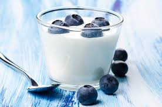

I love Yogurt
Especially Greek Yogurt

Greek yogurt is a yogurt that has been strained to remove most of its whey, resulting in a thicker consistency than unstrained yogurt, while preserving yogurt's distinctive sour taste. Like many types of yogurt, strained yogurt is often made from milk that has been enriched by boiling off some of its water content, or by adding extra butterfat and powdered milk. In Europe and North America, it is often made with low-fat or fat-free yogurt. In Iceland a similar product named skyr is produced.